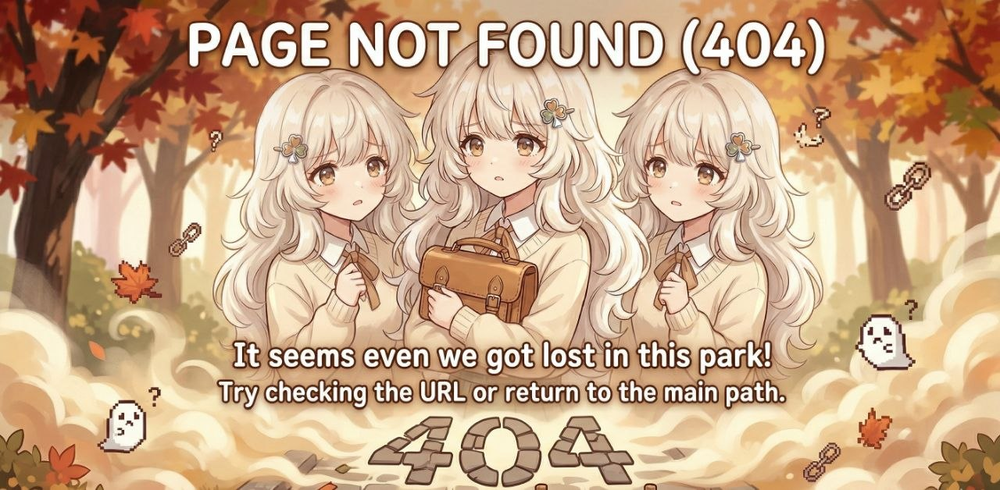

🦀 Oops!
Page Not Found
It looks like you’ve wandered into a quiet corner of the nest. The page you’re looking for might be napping, or perhaps it’s off exploring with Yui.

“Even lost paths can lead to cute discoveries.” – Yui
🦀 Oops!
It looks like you’ve wandered into a quiet corner of the nest. The page you’re looking for might be napping, or perhaps it’s off exploring with Yui.

“Even lost paths can lead to cute discoveries.” – Yui